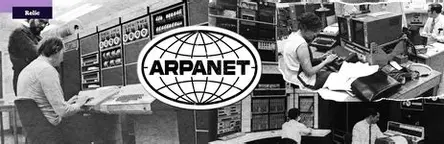

Notes: The History of the Internet and the World Wide Web
1960s – Early Networking
- Researchers began connecting computers to share data and resources.
- The ARPANET, developed by the U.S. Advanced Research Projects Agency (ARPA), became operational in 1969, linking four universities.
- Used packet switching, which sent data in small packets for greater efficiency and reliability.
- ARPANET proved that large-scale computer networking was possible.
1980s – TCP/IP Standardisation
- In 1983, ARPANET adopted TCP/IP (Transmission Control Protocol / Internet Protocol) as its standard.
- This allowed different networks to communicate, creating a “network of networks” – the modern internet.
1990s – The World Wide Web
- Proposed by Tim Berners-Lee at CERN in 1989, the World Wide Web (WWW) made the internet accessible to ordinary users.
- Launched in 1991, it introduced:
- HTML – language for creating web pages
- HTTP – protocol for data transfer
- URLs – addresses for locating pages
- Turned the internet from a specialist tool into a global information system.
1990s–2000s – Expansion and Commercialisation
- Web browsers like Mosaic and Netscape made the web easy to use.
- Internet Service Providers (ISPs) brought connections into homes.
- Rise of email, online shopping, search engines, and early social networks.
Modern Internet
- Broadband, Wi-Fi, and mobile data have made internet access fast and widespread.
- Web 2.0 technologies enabled interactive, user-generated content, leading to social media, streaming, and cloud computing.
Internet & Web Milestones: Flashcards
Tip: Click or tap a card to flip it.

ARPANET (1969)
Developed by ARPA. First operational in 1969 linking four universities. Used packet switching and proved large-scale networking was possible.

World Wide Web (1991)
Proposed in 1989; launched 1991. Key tech: HTML, HTTP, URLs. Made the internet accessible to ordinary users.

Tim Berners-Lee
British computer scientist at CERN. Invented the Web (1989–1991), built the first browser and server.
Did You Know? The first website is still online at info.cern.ch!